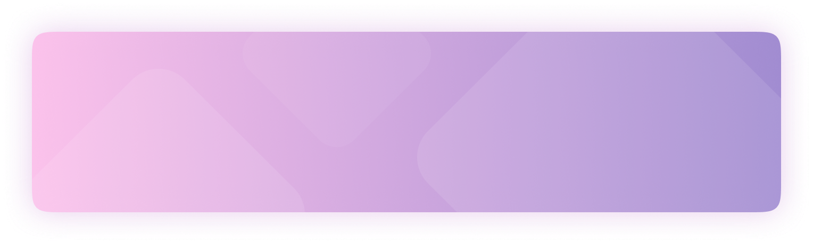
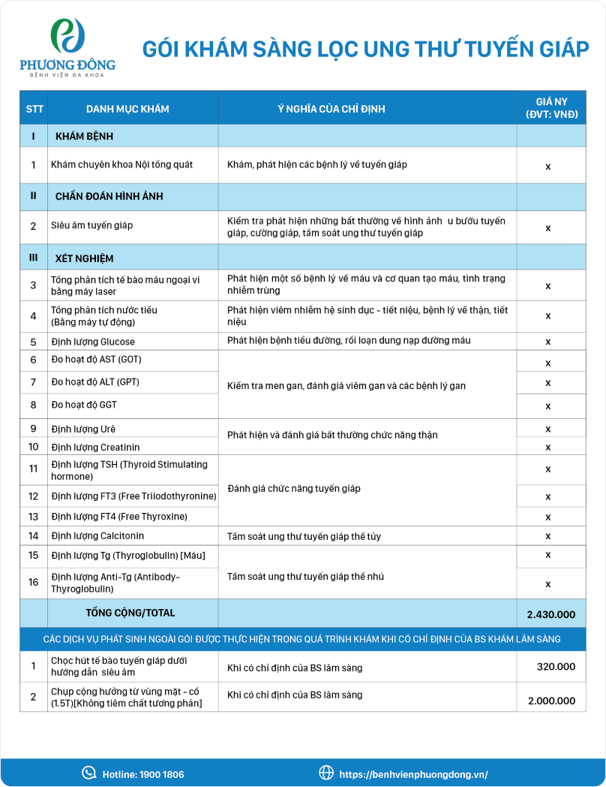

Tầm soát ung thư tuyến giáp là phương pháp y học hiện đại giúp phát hiện sớm các tổn thương tiền ung thư. Đây được đánh giá là chìa khóa để đưa ra phương pháp điều trị sớm và hiệu quả nhất.
Tầm soát ung thư tuyến giáp là phương pháp y học hiện đại giúp phát hiện sớm các tổn thương tiền ung thư. Đây được đánh giá là chìa khóa để đưa ra phương pháp điều trị sớm nhất, nâng cao hiệu quả phục hồi, hạn chế các diễn biến xấu dẫn tới tử vong.
Hiện nay xét nghiệm tầm soát ung thư tuyến giáp được nhiều người quan tâm. Thống kê cho thấy căn bệnh chỉ chiếm từ 1 - 2% trong toàn bộ các loại ung thư, tuy nhiên nó lại chiếm tới 90% ung thư các tuyến nội tiết. Đặc biệt, bệnh đứng hàng thứ 9 trong số các ung thư xảy ra ở nữ giới.
Điều đáng lo ngại hiện nay là bệnh ung thư tuyến giáp vẫn thường bị bỏ sót. Thậm chí có từ 20 - 60% tổng số bệnh nhân không biết mình mắc bệnh cho tới khi diễn biến xấu ở giai đoạn cuối. Điều này là cực kỳ đáng lo ngại bởi nghiên cứu đã chỉ ra rằng bệnh ung thư tuyến giáp có tỷ lệ chữa khỏi đạt tới 90% nếu như được khám và phát hiện sớm.
GỌI CHO CHÚNG TÔIPhát hiện sớm bệnh lý ung thư tuyến giáp không chỉ nâng cao hiệu quả trong điều trị mà còn hạn chế các biến chứng, tổn thương, gia tăng cơ hồi hồi phục hoàn toàn cho người bệnh. Theo khuyến cáo của bác sĩ Bệnh Viện Đa khoa Phương Đông, những trường hợp sau đây nên khám sàng lọc định kỳ căn bệnh.


